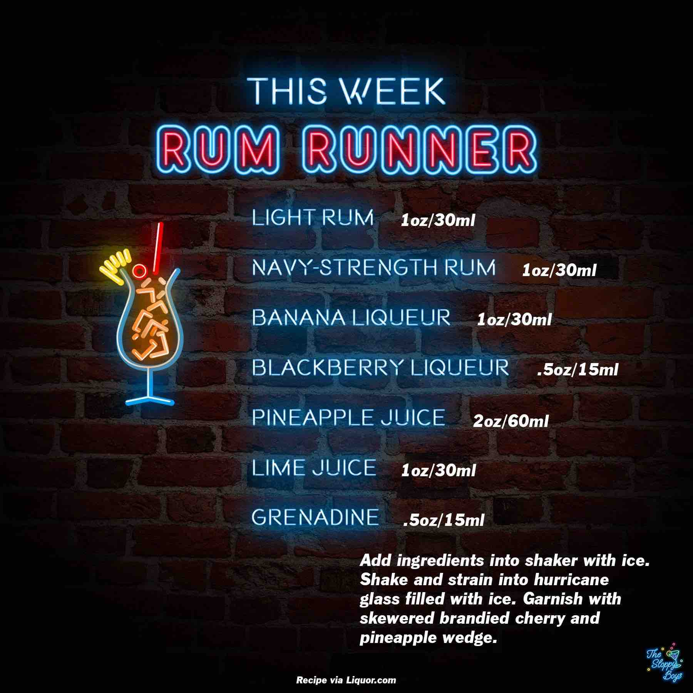

Rum Runner
Ingredients
- Light Rum (1oz/30ml)
- Navy-Strength Rum (1oz/30ml)
- Banana Liqueur (1oz/30ml)
- Blackberry Liqueur (.5oz/15ml)
- Pineapple Juice (2oz/60ml)
- Lime Juice (1oz/30ml)
- Grenadine (.5oz/15ml)
Steps
- Add ingredients into shaker with ice.
- Shake and strain into hurricane glass filled with ice.
- Garnish with skewered brandied cherry and pineapple wedge.
Notes